ตุลาคม 2569
คู่มือการใช้งาน
แอปบัตรจอดรถ
สำหรับสำนักงานนิติบุคคล คณะกรรมการ และเจ้าหน้าที่รักษาความปลอดภัย ใช้สแกน QR บนบัตรจอดรถ ตรวจสอบสิทธิ์ ลงทะเบียนรถ และบันทึกการกระทำผิด คู่มือแบ่งเป็น 3 ส่วนตามบทบาท แต่ละส่วนพิมพ์แยกและใช้ได้ครบในตัว
คู่มือฉบับออนไลน์: phemarajata.github.io/bxt50-tags/guide
คู่มือสำหรับสำนักงานนิติฯ
สำนักงานนิติฯ เป็นบทบาทเดียวที่แก้ไขทะเบียนได้ ทั้งลงทะเบียนรถกับบัตร แก้ไขข้อมูลบัตร ถ่ายรูปรถ บันทึกการกระทำผิด และเชิญหรือระงับผู้ใช้ ระบบตรวจสิทธิ์ที่ฐานข้อมูลทุกครั้งที่บันทึก จึงไม่มีบทบาทอื่นแก้ข้อมูลแทนได้
| สิ่งที่ทำได้ในแอป | รปภ. | สำนักงานนิติฯ | กรรมการ |
|---|---|---|---|
| สแกน QR หรือพิมพ์เลขบัตร | ได้ | ได้ | ได้ |
| สถานะบัตร วันหมดอายุ สิทธิ์ช่องจอด รูปรถ | ได้ | ได้ | ได้ |
| ทะเบียนรถ ยี่ห้อ รุ่น สี เลขห้อง เบอร์โทร | ได้ | ได้ | ได้ |
| ชื่อ บ้านเลขที่ LINE ID เบอร์สำรอง หมายเหตุ และประวัติการออกบัตร | ไม่ได้ | ได้ | ได้ |
| ค้นหาด้วยทะเบียนรถ เลขห้อง หรือชื่อ | ไม่ได้ | ได้ | ได้ |
| การกระทำผิดของบัตรที่เปิด | จำนวนครั้ง | ได้ | ได้ |
| ประวัติการกระทำผิดทั้งหมด | ไม่ได้ | ได้ | ได้ |
| ลงทะเบียนรถ แก้ไขข้อมูลบัตร ถ่ายรูปรถ | ไม่ได้ | ได้ | ไม่ได้ |
| บันทึกการกระทำผิด | ไม่ได้ | ได้ | ไม่ได้ |
| เชิญผู้ใช้ รีเซ็ต PIN ระงับผู้ใช้ | ไม่ได้ | ได้ | ไม่ได้ |
- 1.1ภาพรวมและสิทธิ์ของท่าน
- 1.2เริ่มใช้งานและเข้าสู่ระบบ
- 1.3สแกนบัตรและค้นหา
- 1.4อ่านสถานะบัตร
- 1.5ข้อมูลบัตร
- 1.6ลงทะเบียนและแก้ไขบัตร
- 1.7บันทึกและติดตามการกระทำผิด
- 1.8จัดการผู้ใช้
- 1.9คำถามที่พบบ่อย
มะเขือ & มังคุด ฝากบอก
ข้อมูลผู้พักอาศัยเป็นข้อมูลส่วนบุคคล ใช้เพื่อดูแลที่จอดรถเท่านั้น ห้ามถ่ายภาพหน้าจอส่งต่อ ทุกครั้งที่เปิดดูบัตร ระบบบันทึกชื่อของท่านและเวลาไว้เริ่มใช้งานและเข้าสู่ระบบ
ผู้ใช้ทุกคนเริ่มจากคำเชิญ ท่านหรือเจ้าหน้าที่สำนักงานคนอื่นสร้างคำเชิญได้ที่หน้า จัดการผู้ใช้ (หน้า 1.8) คำเชิญมีรหัส 6 ตัว ใช้ได้ครั้งเดียวภายใน 48 ชั่วโมง ท่านตั้ง PIN 4 หลักเอง ไม่มีใครรู้ PIN ของท่าน และไม่ต้องมีบัญชี Google
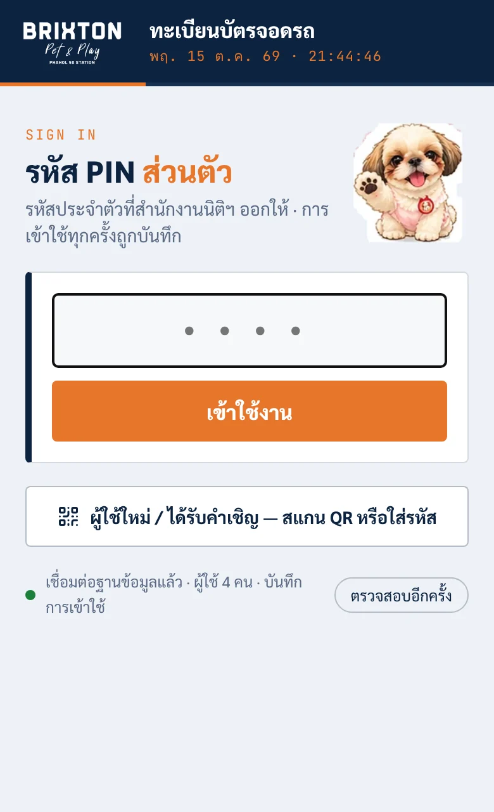
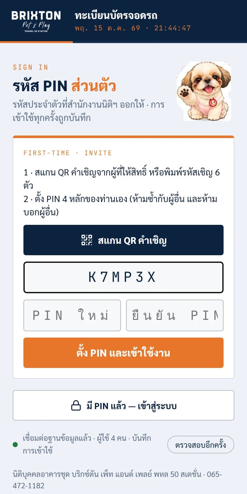
ครั้งแรก: รับคำเชิญ
- เปิดลิงก์คำเชิญที่ได้รับทาง LINE หน้าตั้ง PIN จะเปิดพร้อมรหัสเชิญให้
- หรือเปิดแอป แตะ ผู้ใช้ใหม่ / ได้รับคำเชิญ แล้วแตะ สแกน QR คำเชิญ จากโทรศัพท์ของผู้เชิญ หรือพิมพ์รหัส 6 ตัว
- ตั้ง PIN 4 หลัก พิมพ์ทั้งสองช่องให้ตรงกัน PIN ต้องไม่ซ้ำกับผู้ใช้คนอื่น
- แตะ ตั้ง PIN และเข้าใช้งาน แอปเข้าสู่ระบบให้ทันที และแสดงรหัสผู้ใช้ของท่าน เช่น OF02
ครั้งต่อไป
- เปิด phemarajata.github.io/bxt50-tags พิมพ์ PIN แล้วแตะ เข้าใช้งาน แอปรู้เองว่าท่านเป็นสำนักงานนิติฯ
- ชื่อของท่านอยู่มุมขวาบน แตะชื่อเพื่อออกจากระบบทุกครั้งที่เลิกใช้งาน
สแกนบัตรและค้นหา
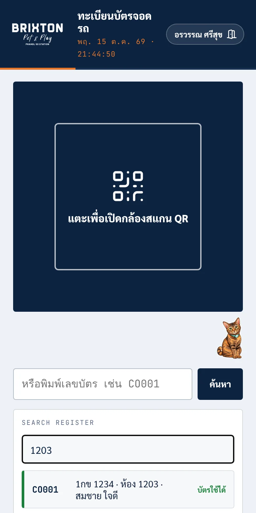
สแกน QR บนบัตร
- แตะกรอบสีกรมท่า แตะเพื่อเปิดกล้องสแกน QR ครั้งแรกให้กดอนุญาตการใช้กล้อง
- เล็ง QR บนบัตรให้อยู่ในกรอบ ห่างประมาณ 15–25 ซม. บัตรรถยนต์ติดด้านในกระจกหน้า บัตรจักรยานยนต์ติดบนตัวรถ ผลแสดงทันที
- ถ้า QR อ่านไม่ได้ (แสงสะท้อน ฟิล์มเข้ม) ให้พิมพ์เลขบัตรที่พิมพ์อยู่บนบัตร เช่น CO001 แล้วแตะ ค้นหา เว้นวรรคหรือพิมพ์ตัวเล็กก็ได้
| อักษรนำ | ประเภทบัตร |
|---|---|
| CO | รถยนต์ · เจ้าของร่วม |
| CR | รถยนต์ · ผู้เช่า |
| MO | จักรยานยนต์ · เจ้าของร่วม |
| MR | จักรยานยนต์ · ผู้เช่า |
ตามด้วยเลข 3 หลัก ถ้าขึ้น ไม่พบเลขบัตร … ในทะเบียน แปลว่าเลขผิดหรือไม่ใช่บัตรของโครงการ
ค้นหาในทะเบียน
พิมพ์บางส่วนของทะเบียนรถ เลขห้อง บ้านเลขที่ ชื่อ หรือเลขบัตร ในช่อง SEARCH REGISTER ผลแสดงได้สูงสุด 8 รายการพร้อมสถานะบัตร แตะรายการเพื่อเปิด
ปุ่มบนหน้าแรก
- ประวัติการกระทำผิดทั้งหมด บอกจำนวนเรื่องที่ยังค้าง (หน้า 1.7)
- จัดการผู้ใช้และรหัส PIN (หน้า 1.8)
อ่านสถานะบัตร
สถานะอยู่บนสุดของหน้าบัตร แถบสีด้านบนการ์ดและป้ายมุมขวาบอกผลทันที ใต้เลขบัตรบอกวันหมดอายุหรือเหตุผล
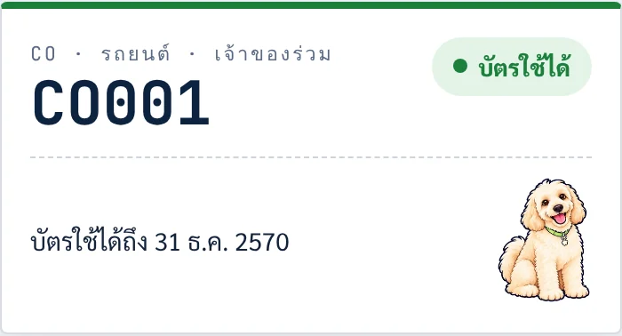
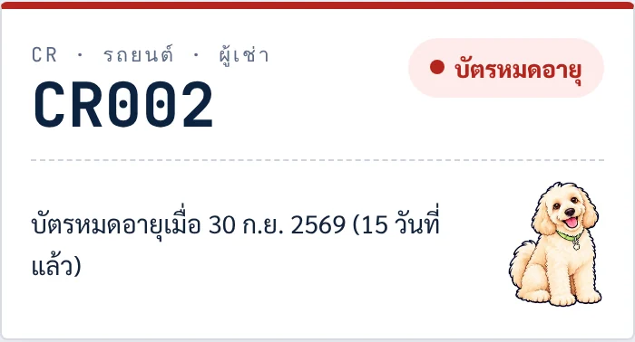
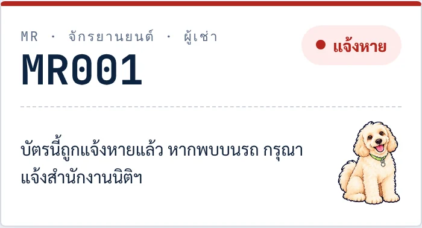
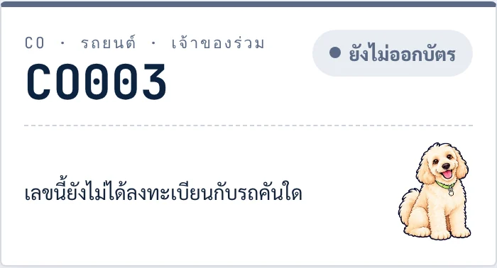
| สถานะอื่น | ความหมาย |
|---|---|
| ● บัตรใกล้หมดอายุ | ยังใช้ได้ เหลือไม่เกิน 30 วัน |
| ● ยกเลิก / คืนบัตรแล้ว | ไม่มีสิทธิ์จอดในโครงการ |
| ▣ รถคันที่ 2 ค้างชำระ | ค่าธรรมเนียมรายปีของรถคันที่ 2 เลยกำหนด |
แอปตัดสินสถานะอย่างไร (ตามลำดับ)
- สถานะในทะเบียนเป็น ยังไม่ออก → ยังไม่ออกบัตร
- เป็น สูญหาย → แจ้งหาย
- เป็น ยกเลิก หรือ คืนแล้ว → ยกเลิกแล้ว / คืนบัตรแล้ว
- นอกนั้นดูวันหมดอายุบัตรในทะเบียน ถ้าไม่ได้กรอกไว้ ถือว่าหมดอายุ 31 ธ.ค. 2570 (สิ้นรอบบัตรเจ้าของร่วม)
- เลยวันหมดอายุแล้ว → บัตรหมดอายุ · เหลือไม่เกิน 30 วัน → บัตรใกล้หมดอายุ (ยังใช้ได้) · มากกว่านั้น → บัตรใช้ได้
ป้าย รถคันที่ 2 · ค้างชำระค่าธรรมเนียม แสดงแยกจากสถานะบัตร เมื่อรถเป็นคันที่ 2 ของห้อง และช่อง “ชำระถึง” ว่างหรือเลยวันที่กรอกไว้แล้ว
ข้อมูลบัตรแบบเต็ม
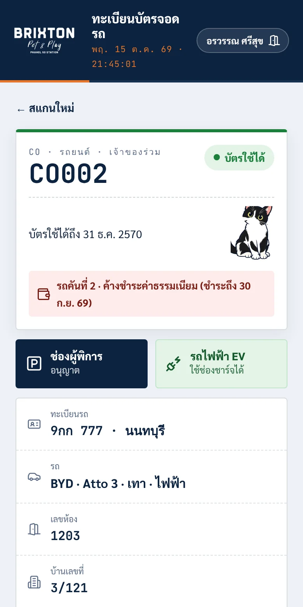
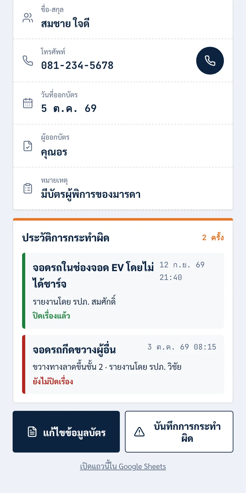
ส่วนต่าง ๆ ของหน้าบัตร
- การ์ดสถานะ เลขบัตร ประเภท สถานะ และวันหมดอายุ
- ช่องสิทธิ์ รถยนต์แสดงช่องผู้พิการ จักรยานยนต์แสดงช่องบิ๊กไบค์ (พื้นสีกรมท่า = อนุญาต) และช่องรถไฟฟ้า EV (พื้นสีเขียว = ใช้ช่องชาร์จได้)
- รูปรถ โหลดตามมาหลังเปิดบัตร ถ้าลงทะเบียนพร้อมรูป
- ข้อมูลรถและผู้ลงทะเบียน ทะเบียน รถ เลขห้อง บ้านเลขที่ ชื่อ โทรศัพท์ เบอร์สำรอง LINE ID วันที่ออกบัตร วันหมดอายุ สิ้นสุดสัญญาเช่า ผู้ออกบัตร เลขบัตรเดิม หมายเหตุ (แสดงเฉพาะช่องที่มีข้อมูล)
- ปุ่มโทรศัพท์ สีกรมท่า แตะเพื่อโทรออก
- ประวัติการกระทำผิด ของบัตรนี้ สีแดง = ยังไม่ปิดเรื่อง สีเขียว = ปิดเรื่องแล้ว
- แก้ไขข้อมูลบัตร หรือ ลงทะเบียนรถกับบัตรนี้ (หน้า 1.6) และ บันทึกการกระทำผิด (หน้า 1.7)
ลงทะเบียนและแก้ไขบัตร
บัตรทุกใบมีอยู่ในทะเบียนแล้วในสถานะ ยังไม่ออก การลงทะเบียนคือการผูกรถเข้ากับบัตรใบนั้นในแอป ไม่ต้องเปิด Google Sheets
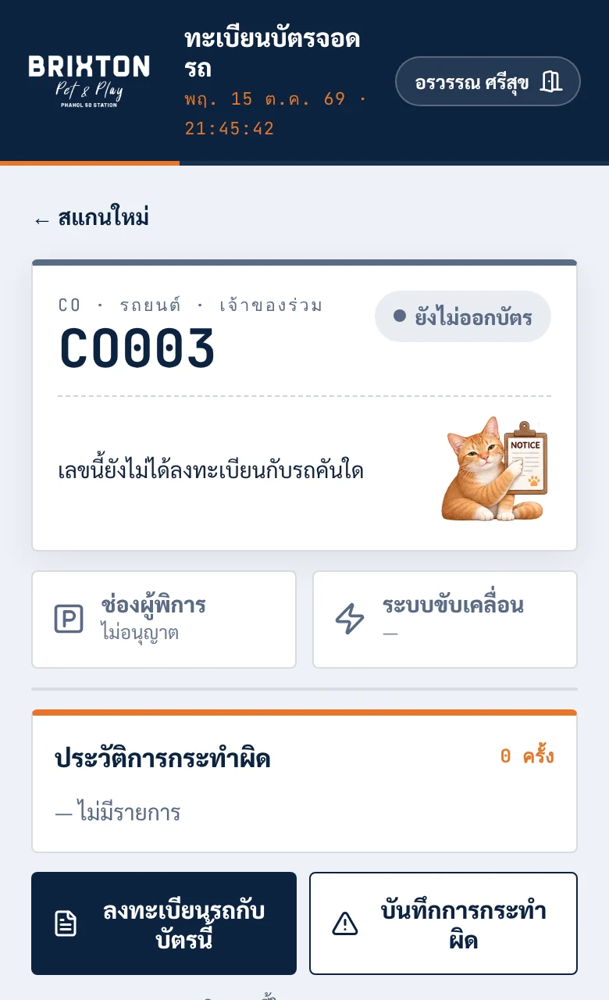
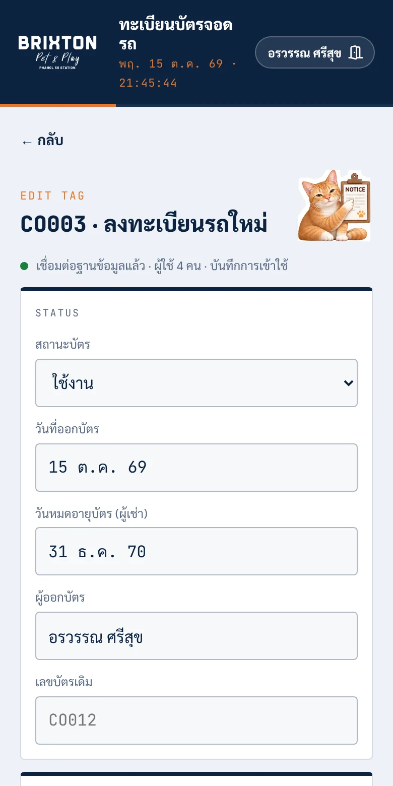
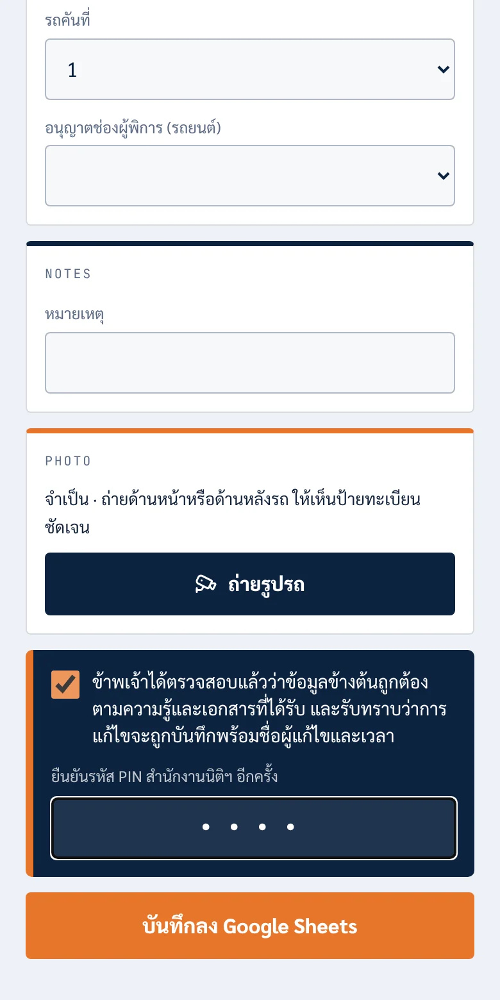
- สแกนบัตรที่จะมอบให้ (สถานะ ยังไม่ออกบัตร) แล้วแตะ ลงทะเบียนรถกับบัตรนี้
- แอปกรอกให้เอง: สถานะ ใช้งาน วันที่ออกบัตร = วันนี้ ผู้ออกบัตร = ชื่อท่าน และบัตรเจ้าของร่วมได้วันหมดอายุ 31 ธ.ค. 70
- กรอก ทะเบียนรถ เลขห้อง โทรศัพท์ (จำเป็น) และข้อมูลรถอื่น บัตรผู้เช่าต้องกรอกวันหมดอายุบัตร พิมพ์วันที่แบบ 31 ธ.ค. 70 หรือ 31/12/70
- แตะ ถ่ายรูปรถ ด้านหน้าหรือด้านหลัง ให้เห็นป้ายทะเบียนชัด (จำเป็นเมื่อลงทะเบียนใหม่) แอปย่อขนาดรูปให้เอง
- ติ๊กยืนยันความถูกต้อง ใส่ PIN ของท่านอีกครั้ง แล้วแตะ บันทึกลง Google Sheets
- ขึ้นข้อความ บันทึกแล้ว · แถว … แล้วกลับหน้าบัตรเอง ทุกช่องที่เปลี่ยนถูกบันทึกแบบ ก่อน → หลัง พร้อมชื่อผู้แก้ไข
รถคันที่ 2 ของห้อง
เลือก รถคันที่ = 2 จะมีช่อง ค่าธรรมเนียมรถคันที่ 2 ชำระถึง ถ้าช่องนี้ว่างหรือเลยวันที่กรอก หน้าบัตรจะขึ้นป้ายค้างชำระให้ รปภ. เห็น
แก้ไขภายหลัง
ใช้ปุ่ม แก้ไขข้อมูลบัตร ฟอร์มเดียวกัน ถ่ายรูปใหม่ได้ แจ้งหาย ยกเลิก หรือรับบัตรคืน ให้เปลี่ยนสถานะบัตรเป็น สูญหาย ยกเลิก หรือ คืนแล้ว
บันทึกและติดตามการกระทำผิด
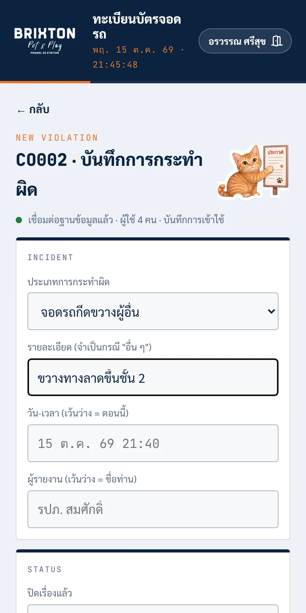
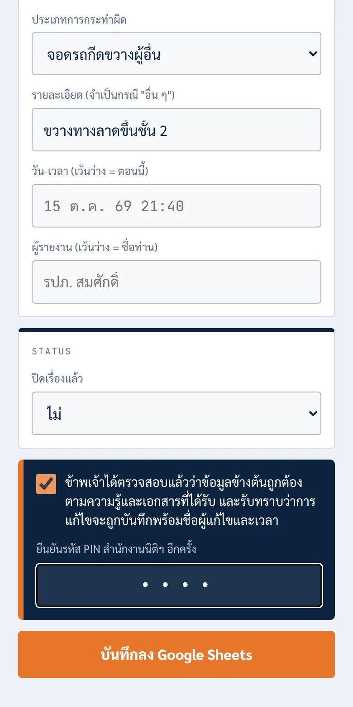
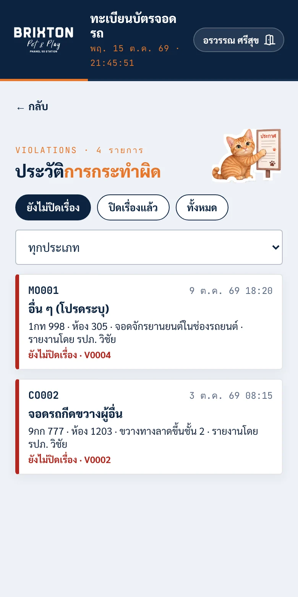
บันทึก
- เปิดบัตร แตะ บันทึกการกระทำผิด
- เลือกประเภท ถ้าเลือก อื่น ๆ ต้องกรอกรายละเอียด
- วัน-เวลา เว้นว่างได้ (ใช้เวลาที่บันทึก) ผู้รายงาน เว้นว่างได้ (ใช้ชื่อท่าน)
- ติ๊กยืนยัน ใส่ PIN แล้วบันทึก ระบบออกเลขเรื่อง V0001, V0002 …
ติดตาม
หน้าแรก → ประวัติการกระทำผิดทั้งหมด (ปุ่มบอกจำนวนเรื่องค้าง) กรอง ยังไม่ปิดเรื่อง / ปิดเรื่องแล้ว / ทั้งหมด และตามประเภท รายการล่าสุดอยู่บนสุด แตะเพื่อเปิดบัตร
ประเภทการกระทำผิด
- จอดในที่คนพิการเกินเวลาที่กำหนด
- จอดในที่คนพิการโดยไม่ได้รับอนุญาต
- ขับยานพาหนะย้อนศร
- จอดรถในที่ห้ามจอด
- จอดรถกีดขวางผู้อื่น
- จอดรถในช่องจอด EV โดยไม่ได้ชาร์จ
- จอดรถในช่อง EV ค้างไว้เกิน 15 นาทีหลังชาร์จหยุด
- อื่น ๆ (โปรดระบุ)
จัดการผู้ใช้
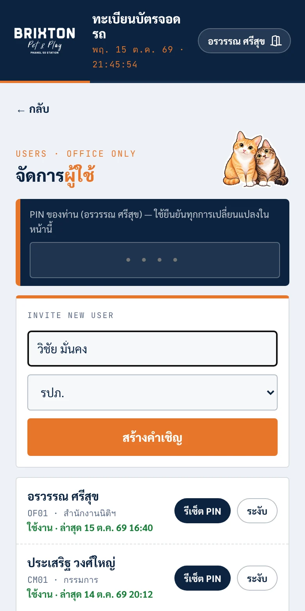
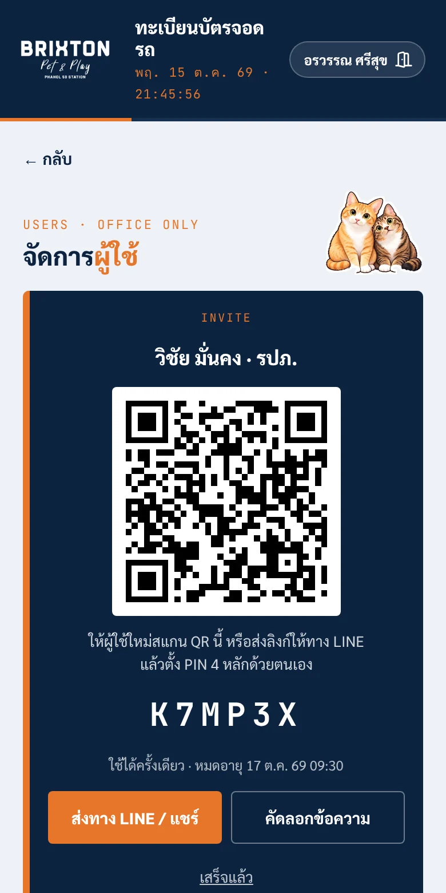
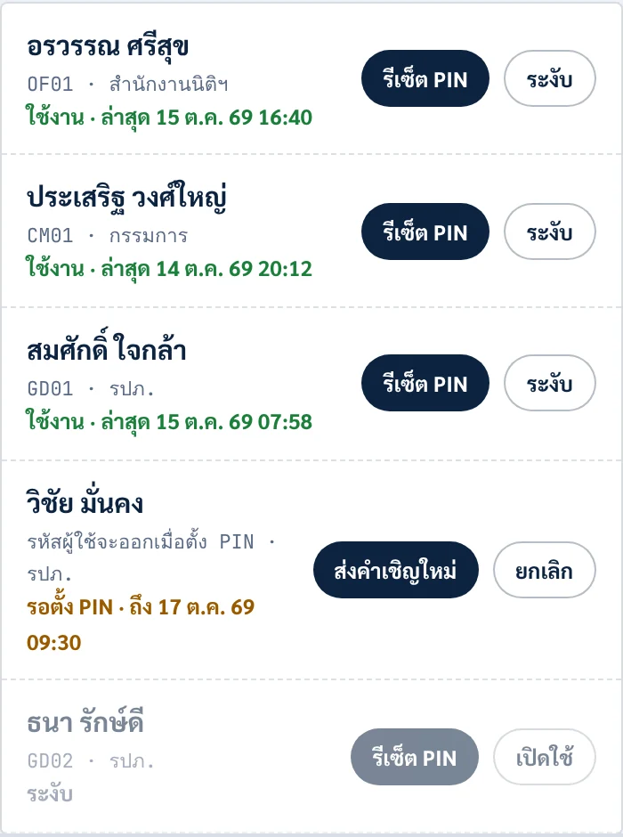
เชิญผู้ใช้ใหม่
- หน้าแรก → จัดการผู้ใช้และรหัส PIN ใส่ PIN ของท่านในช่องด้านบน ใช้ยืนยันทุกรายการในหน้านี้
- กรอกชื่อ-สกุล เลือกบทบาท แล้วแตะ สร้างคำเชิญ
- ให้ผู้ใช้ใหม่สแกน QR จากโทรศัพท์ของท่าน หรือแตะ ส่งทาง LINE / แชร์ คำเชิญใช้ได้ครั้งเดียวภายใน 48 ชั่วโมง
- รายชื่อขึ้น รอตั้ง PIN จนกว่าผู้ใช้ตั้ง PIN จึงได้รหัสผู้ใช้ (OF = สำนักงาน · CM = กรรมการ · GD = รปภ. ตามด้วยเลขลำดับ)
| ปุ่ม | ใช้เมื่อ |
|---|---|
| รีเซ็ต PIN | ลืม PIN หรือเปลี่ยนโทรศัพท์ PIN เดิมใช้ไม่ได้ทันที แล้วได้คำเชิญใหม่ส่งให้ผู้ใช้ |
| ระงับ / เปิดใช้ | ลาออกหรือย้ายงาน ระงับแล้วเข้าใช้ไม่ได้ตั้งแต่การแตะครั้งถัดไป ประวัติยังอยู่ครบ ระงับบัญชีของตัวเองไม่ได้ |
| ส่งคำเชิญใหม่ | คำเชิญเดิมหมดอายุหรือหาย รหัสเดิมใช้ไม่ได้อีก |
| ยกเลิก | ลบคำเชิญที่ยังไม่มีผู้ใช้ตั้ง PIN |
คำถามที่พบบ่อย
ตรวจว่าเปิดผ่านลิงก์ github.io และอนุญาตกล้องแล้ว: ตั้งค่า → Chrome หรือ Safari → กล้อง จากนั้นโหลดหน้าใหม่ หรือพิมพ์เลขบัตรแทน
เปลี่ยนมุมเพื่อลดแสงสะท้อนบนกระจก หรือพิมพ์เลขบัตรที่พิมพ์อยู่บนบัตรแทน
บัตรอาจไม่ใช่ของโครงการหรือพิมพ์เลขผิด ตรวจอักษร CO / CR / MO / MR และเลข 3 หลัก
ให้เจ้าหน้าที่สำนักงานอีกคนกด รีเซ็ต PIN ให้ท่านที่หน้าจัดการผู้ใช้ แล้วรับคำเชิญใหม่
มีการใส่ PIN หรือรหัสเชิญผิดรวม 10 ครั้ง รอ 15 นาทีแล้วลองใหม่ หากเกิดบ่อยให้แจ้งสำนักงาน
ไม่มีการใช้งาน 5 นาที หรือใช้ต่อเนื่องครบ 12 ชั่วโมง ใส่ PIN เพื่อเข้าใหม่ได้ทันที
ข้อมูลในฟอร์มยังอยู่ ใส่ PIN แล้วกดบันทึกอีกครั้ง ตรวจว่าจุดสถานะเป็นสีเขียว
เป็นสัตว์เลี้ยงจริงของคณะกรรมการ 7 ตัว ผลัดกันขึ้นจอวันละชุด ไม่มีผลต่อการใช้งาน: ไข่ตุ๋น จี๊ด และตู้ม ของคุณเฟิร์น · มะเขือ & มังคุด ของคุณเบนซ์ · Raptor ของคุณอาย · จู๋จี๋ และเหมียว ของคุณพีระ
- ข้อมูลอยู่ในชีตส่วนตัวของนิติบุคคล เปิดได้ผ่านแอปหลังใส่ PIN เท่านั้น
- ออกจากระบบแล้ว ข้อมูลทะเบียนไม่ค้างในโทรศัพท์
- ทุกการเปิดดู แก้ไข และดูรูป ถูกบันทึกชื่อผู้ใช้และเวลา
- ใช้ข้อมูลเพื่อดูแลที่จอดรถเท่านั้น
สำนักงานนิติบุคคลอาคารชุด
คู่มือสำหรับกรรมการ
กรรมการเห็นข้อมูลบัตรครบทุกช่องเหมือนสำนักงานนิติฯ ค้นหาทะเบียนได้ และติดตามประวัติการกระทำผิดทั้งหมด แต่แก้ไขข้อมูลไม่ได้ หากพบข้อมูลผิดให้แจ้งสำนักงานนิติฯ เพื่อแก้ในระบบ
| สิ่งที่ทำได้ในแอป | รปภ. | สำนักงานนิติฯ | กรรมการ |
|---|---|---|---|
| สแกน QR หรือพิมพ์เลขบัตร | ได้ | ได้ | ได้ |
| สถานะบัตร วันหมดอายุ สิทธิ์ช่องจอด รูปรถ | ได้ | ได้ | ได้ |
| ทะเบียนรถ ยี่ห้อ รุ่น สี เลขห้อง เบอร์โทร | ได้ | ได้ | ได้ |
| ชื่อ บ้านเลขที่ LINE ID เบอร์สำรอง หมายเหตุ และประวัติการออกบัตร | ไม่ได้ | ได้ | ได้ |
| ค้นหาด้วยทะเบียนรถ เลขห้อง หรือชื่อ | ไม่ได้ | ได้ | ได้ |
| การกระทำผิดของบัตรที่เปิด | จำนวนครั้ง | ได้ | ได้ |
| ประวัติการกระทำผิดทั้งหมด | ไม่ได้ | ได้ | ได้ |
| ลงทะเบียนรถ แก้ไขข้อมูลบัตร ถ่ายรูปรถ | ไม่ได้ | ได้ | ไม่ได้ |
| บันทึกการกระทำผิด | ไม่ได้ | ได้ | ไม่ได้ |
| เชิญผู้ใช้ รีเซ็ต PIN ระงับผู้ใช้ | ไม่ได้ | ได้ | ไม่ได้ |
- 2.1ภาพรวมและสิทธิ์ของท่าน
- 2.2เริ่มใช้งานและเข้าสู่ระบบ
- 2.3สแกนบัตรและค้นหา
- 2.4อ่านสถานะบัตร
- 2.5ข้อมูลบัตร
- 2.6คำถามที่พบบ่อย
เหมียว ฝากบอก
ข้อมูลผู้พักอาศัยเป็นข้อมูลส่วนบุคคล ใช้เพื่อดูแลที่จอดรถเท่านั้น ห้ามถ่ายภาพหน้าจอส่งต่อ ทุกครั้งที่เปิดดูบัตร ระบบบันทึกชื่อของท่านและเวลาไว้เริ่มใช้งานและเข้าสู่ระบบ
ผู้ใช้ทุกคนเริ่มจากคำเชิญ สำนักงานนิติฯ เป็นผู้สร้างคำเชิญให้ คำเชิญมีรหัส 6 ตัว ใช้ได้ครั้งเดียวภายใน 48 ชั่วโมง ท่านตั้ง PIN 4 หลักเอง ไม่มีใครรู้ PIN ของท่าน และไม่ต้องมีบัญชี Google
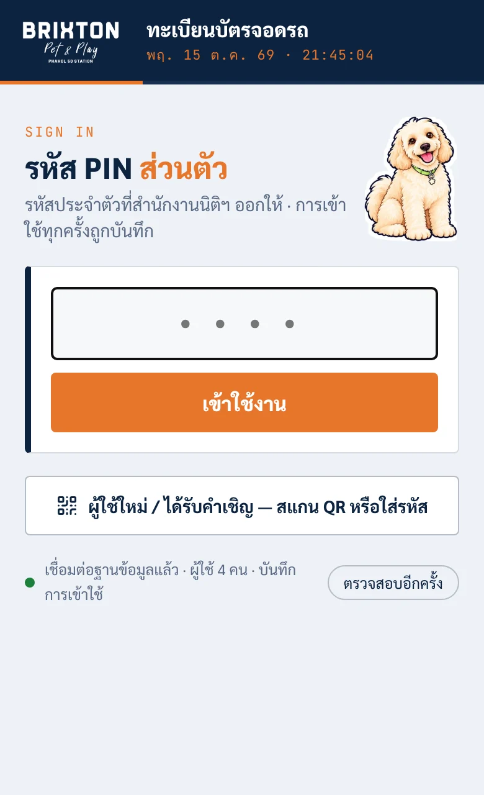
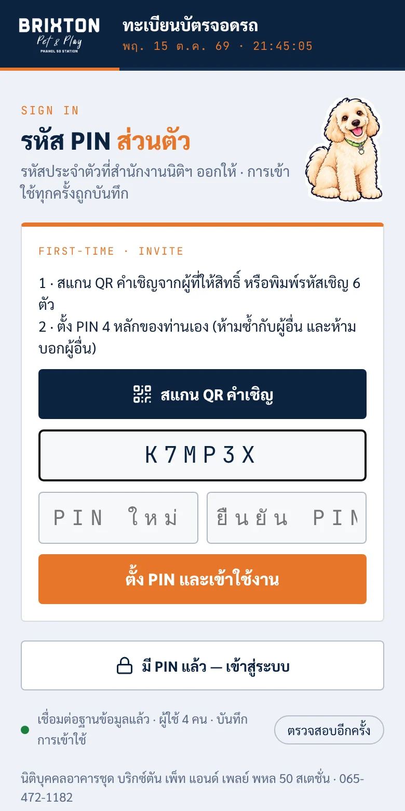
ครั้งแรก: รับคำเชิญ
- เปิดลิงก์คำเชิญที่ได้รับทาง LINE หน้าตั้ง PIN จะเปิดพร้อมรหัสเชิญให้
- หรือเปิดแอป แตะ ผู้ใช้ใหม่ / ได้รับคำเชิญ แล้วแตะ สแกน QR คำเชิญ จากโทรศัพท์ของผู้เชิญ หรือพิมพ์รหัส 6 ตัว
- ตั้ง PIN 4 หลัก พิมพ์ทั้งสองช่องให้ตรงกัน PIN ต้องไม่ซ้ำกับผู้ใช้คนอื่น
- แตะ ตั้ง PIN และเข้าใช้งาน แอปเข้าสู่ระบบให้ทันที และแสดงรหัสผู้ใช้ของท่าน เช่น CM02
ครั้งต่อไป
- เปิด phemarajata.github.io/bxt50-tags พิมพ์ PIN แล้วแตะ เข้าใช้งาน แอปรู้เองว่าท่านเป็นกรรมการ
- ชื่อของท่านอยู่มุมขวาบน แตะชื่อเพื่อออกจากระบบทุกครั้งที่เลิกใช้งาน
สแกนบัตรและค้นหา
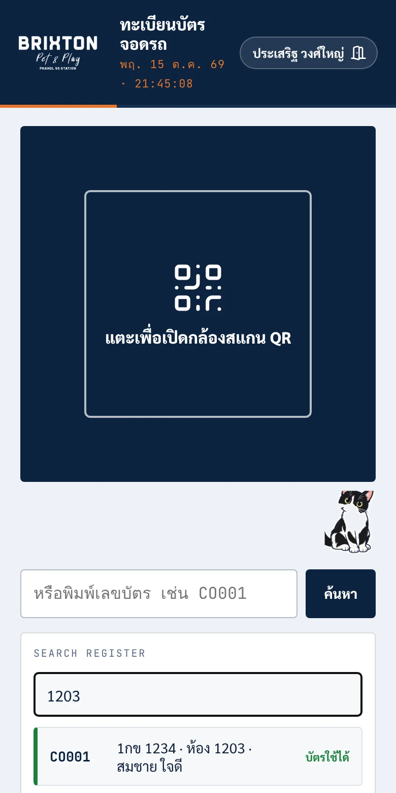
สแกน QR บนบัตร
- แตะกรอบสีกรมท่า แตะเพื่อเปิดกล้องสแกน QR ครั้งแรกให้กดอนุญาตการใช้กล้อง
- เล็ง QR บนบัตรให้อยู่ในกรอบ ห่างประมาณ 15–25 ซม. บัตรรถยนต์ติดด้านในกระจกหน้า บัตรจักรยานยนต์ติดบนตัวรถ ผลแสดงทันที
- ถ้า QR อ่านไม่ได้ (แสงสะท้อน ฟิล์มเข้ม) ให้พิมพ์เลขบัตรที่พิมพ์อยู่บนบัตร เช่น CO001 แล้วแตะ ค้นหา เว้นวรรคหรือพิมพ์ตัวเล็กก็ได้
| อักษรนำ | ประเภทบัตร |
|---|---|
| CO | รถยนต์ · เจ้าของร่วม |
| CR | รถยนต์ · ผู้เช่า |
| MO | จักรยานยนต์ · เจ้าของร่วม |
| MR | จักรยานยนต์ · ผู้เช่า |
ตามด้วยเลข 3 หลัก ถ้าขึ้น ไม่พบเลขบัตร … ในทะเบียน แปลว่าเลขผิดหรือไม่ใช่บัตรของโครงการ
ค้นหาในทะเบียน
พิมพ์บางส่วนของทะเบียนรถ เลขห้อง บ้านเลขที่ ชื่อ หรือเลขบัตร ในช่อง SEARCH REGISTER ผลแสดงได้สูงสุด 8 รายการพร้อมสถานะบัตร แตะรายการเพื่อเปิด
ปุ่มบนหน้าแรก
- ประวัติการกระทำผิดทั้งหมด บอกจำนวนเรื่องที่ยังค้าง (หน้า 2.5)
อ่านสถานะบัตร
สถานะอยู่บนสุดของหน้าบัตร แถบสีด้านบนการ์ดและป้ายมุมขวาบอกผลทันที ใต้เลขบัตรบอกวันหมดอายุหรือเหตุผล
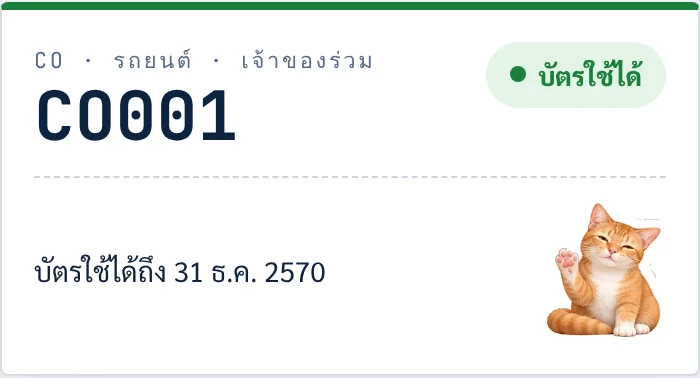
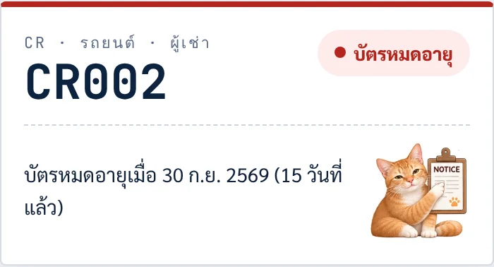
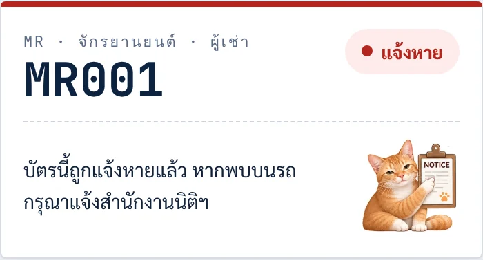
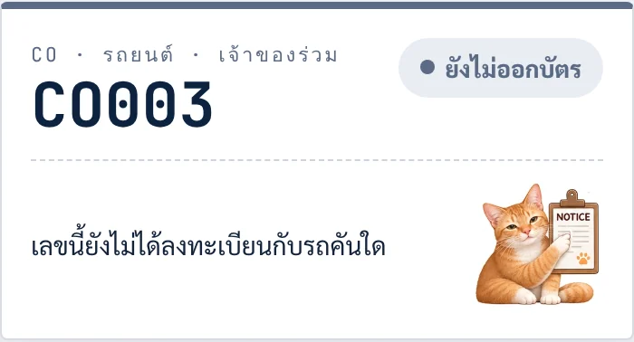
| สถานะอื่น | ความหมาย |
|---|---|
| ● บัตรใกล้หมดอายุ | ยังใช้ได้ เหลือไม่เกิน 30 วัน |
| ● ยกเลิก / คืนบัตรแล้ว | ไม่มีสิทธิ์จอดในโครงการ |
| ▣ รถคันที่ 2 ค้างชำระ | ค่าธรรมเนียมรายปีของรถคันที่ 2 เลยกำหนด |
แอปตัดสินสถานะอย่างไร (ตามลำดับ)
- สถานะในทะเบียนเป็น ยังไม่ออก → ยังไม่ออกบัตร
- เป็น สูญหาย → แจ้งหาย
- เป็น ยกเลิก หรือ คืนแล้ว → ยกเลิกแล้ว / คืนบัตรแล้ว
- นอกนั้นดูวันหมดอายุบัตรในทะเบียน ถ้าไม่ได้กรอกไว้ ถือว่าหมดอายุ 31 ธ.ค. 2570 (สิ้นรอบบัตรเจ้าของร่วม)
- เลยวันหมดอายุแล้ว → บัตรหมดอายุ · เหลือไม่เกิน 30 วัน → บัตรใกล้หมดอายุ (ยังใช้ได้) · มากกว่านั้น → บัตรใช้ได้
ป้าย รถคันที่ 2 · ค้างชำระค่าธรรมเนียม แสดงแยกจากสถานะบัตร เมื่อรถเป็นคันที่ 2 ของห้อง และช่อง “ชำระถึง” ว่างหรือเลยวันที่กรอกไว้แล้ว
ข้อมูลบัตรและการกระทำผิด
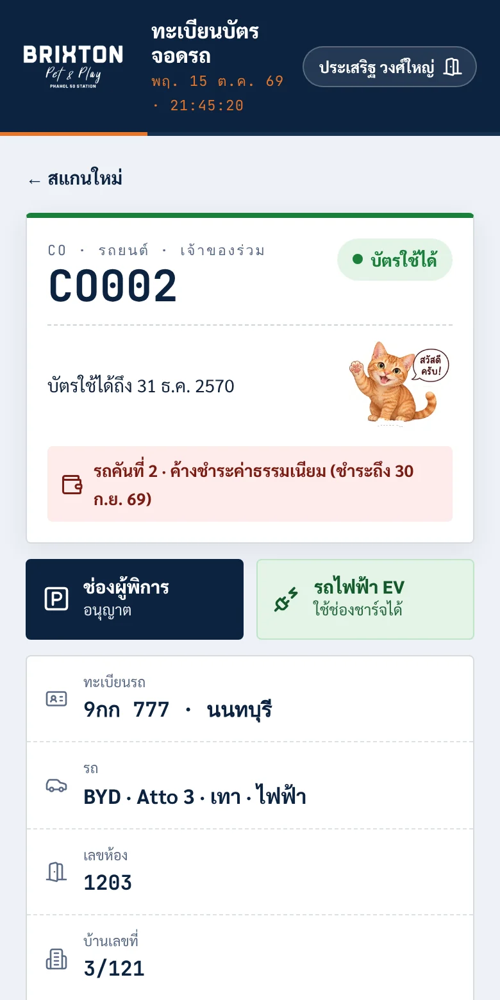
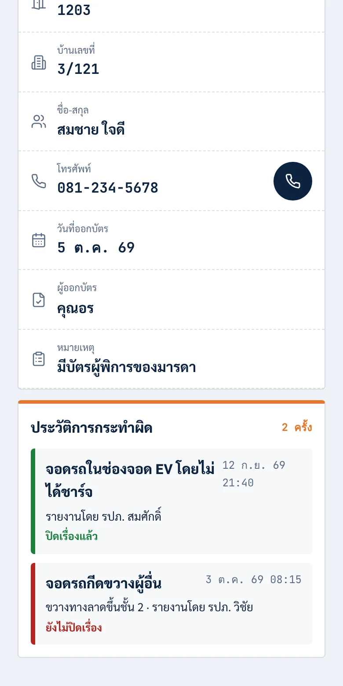
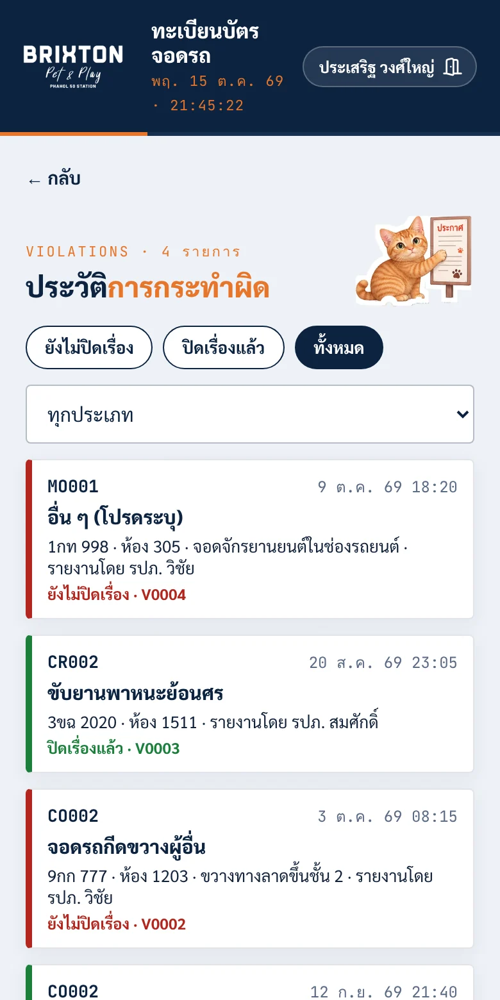
หน้าบัตร
- การ์ดสถานะ เลขบัตร ประเภท สถานะ และวันหมดอายุ
- ช่องสิทธิ์ รถยนต์แสดงช่องผู้พิการ จักรยานยนต์แสดงช่องบิ๊กไบค์ (พื้นสีกรมท่า = อนุญาต) และช่องรถไฟฟ้า EV (พื้นสีเขียว = ใช้ช่องชาร์จได้)
- รูปรถ โหลดตามมาหลังเปิดบัตร ถ้าลงทะเบียนพร้อมรูป
- ข้อมูลรถและผู้ลงทะเบียน แสดงทุกช่องที่มีข้อมูล รวมชื่อ LINE ID และหมายเหตุ
- ประวัติการกระทำผิด ของบัตรนี้ สีแดง = ยังไม่ปิดเรื่อง สีเขียว = ปิดเรื่องแล้ว
ประวัติการกระทำผิดทั้งหมด
หน้าแรก → ประวัติการกระทำผิดทั้งหมด กรอง ยังไม่ปิดเรื่อง / ปิดเรื่องแล้ว / ทั้งหมด และตามประเภท รายการล่าสุดอยู่บนสุด แตะรายการเพื่อเปิดบัตรนั้น
คำถามที่พบบ่อย
ตรวจว่าเปิดผ่านลิงก์ github.io และอนุญาตกล้องแล้ว: ตั้งค่า → Chrome หรือ Safari → กล้อง จากนั้นโหลดหน้าใหม่ หรือพิมพ์เลขบัตรแทน
เปลี่ยนมุมเพื่อลดแสงสะท้อนบนกระจก หรือพิมพ์เลขบัตรที่พิมพ์อยู่บนบัตรแทน
บัตรอาจไม่ใช่ของโครงการหรือพิมพ์เลขผิด ตรวจอักษร CO / CR / MO / MR และเลข 3 หลัก
แจ้งสำนักงานนิติฯ ให้กด รีเซ็ต PIN แล้วรับคำเชิญใหม่ ตั้ง PIN ใหม่ด้วยตนเอง
มีการใส่ PIN หรือรหัสเชิญผิดรวม 10 ครั้ง รอ 15 นาทีแล้วลองใหม่ หากเกิดบ่อยให้แจ้งสำนักงาน
ไม่มีการใช้งาน 5 นาที หรือใช้ต่อเนื่องครบ 12 ชั่วโมง ใส่ PIN เพื่อเข้าใหม่ได้ทันที
แจ้งสำนักงานนิติฯ พร้อมเลขบัตรและสิ่งที่ต้องแก้ กรรมการแก้ไขในแอปไม่ได้
เป็นสัตว์เลี้ยงจริงของคณะกรรมการ 7 ตัว ผลัดกันขึ้นจอวันละชุด ไม่มีผลต่อการใช้งาน: ไข่ตุ๋น จี๊ด และตู้ม ของคุณเฟิร์น · มะเขือ & มังคุด ของคุณเบนซ์ · Raptor ของคุณอาย · จู๋จี๋ และเหมียว ของคุณพีระ
- ข้อมูลอยู่ในชีตส่วนตัวของนิติบุคคล เปิดได้ผ่านแอปหลังใส่ PIN เท่านั้น
- ออกจากระบบแล้ว ข้อมูลทะเบียนไม่ค้างในโทรศัพท์
- ทุกการเปิดดู แก้ไข และดูรูป ถูกบันทึกชื่อผู้ใช้และเวลา
- ใช้ข้อมูลเพื่อดูแลที่จอดรถเท่านั้น
สำนักงานนิติบุคคลอาคารชุด
คู่มือสำหรับรปภ.
รปภ. ใช้แอปที่ป้อมเพื่อสแกนบัตรบนรถ ดูว่าบัตรใช้ได้หรือไม่ รถมีสิทธิ์ช่องจอดใด และโทรหาผู้ลงทะเบียนรถได้ทันที ข้อมูลส่วนตัวบางอย่าง เช่น ชื่อ บ้านเลขที่ และ LINE ID จะไม่ถูกส่งมาที่เครื่องของ รปภ.
| สิ่งที่ทำได้ในแอป | รปภ. | สำนักงานนิติฯ | กรรมการ |
|---|---|---|---|
| สแกน QR หรือพิมพ์เลขบัตร | ได้ | ได้ | ได้ |
| สถานะบัตร วันหมดอายุ สิทธิ์ช่องจอด รูปรถ | ได้ | ได้ | ได้ |
| ทะเบียนรถ ยี่ห้อ รุ่น สี เลขห้อง เบอร์โทร | ได้ | ได้ | ได้ |
| ชื่อ บ้านเลขที่ LINE ID เบอร์สำรอง หมายเหตุ และประวัติการออกบัตร | ไม่ได้ | ได้ | ได้ |
| ค้นหาด้วยทะเบียนรถ เลขห้อง หรือชื่อ | ไม่ได้ | ได้ | ได้ |
| การกระทำผิดของบัตรที่เปิด | จำนวนครั้ง | ได้ | ได้ |
| ประวัติการกระทำผิดทั้งหมด | ไม่ได้ | ได้ | ได้ |
| ลงทะเบียนรถ แก้ไขข้อมูลบัตร ถ่ายรูปรถ | ไม่ได้ | ได้ | ไม่ได้ |
| บันทึกการกระทำผิด | ไม่ได้ | ได้ | ไม่ได้ |
| เชิญผู้ใช้ รีเซ็ต PIN ระงับผู้ใช้ | ไม่ได้ | ได้ | ไม่ได้ |
- 3.1ภาพรวมและสิทธิ์ของท่าน
- 3.2เริ่มใช้งานและเข้าสู่ระบบ
- 3.3สแกนบัตรและค้นหา
- 3.4อ่านสถานะบัตร
- 3.5ข้อมูลบัตร
- 3.6คำถามที่พบบ่อย
จู๋จี๋ ฝากบอก
ข้อมูลผู้พักอาศัยเป็นข้อมูลส่วนบุคคล ใช้เพื่อดูแลที่จอดรถเท่านั้น ห้ามถ่ายภาพหน้าจอส่งต่อ ทุกครั้งที่เปิดดูบัตร ระบบบันทึกชื่อของท่านและเวลาไว้เริ่มใช้งานและเข้าสู่ระบบ
ผู้ใช้ทุกคนเริ่มจากคำเชิญ สำนักงานนิติฯ เป็นผู้สร้างคำเชิญให้ คำเชิญมีรหัส 6 ตัว ใช้ได้ครั้งเดียวภายใน 48 ชั่วโมง ท่านตั้ง PIN 4 หลักเอง ไม่มีใครรู้ PIN ของท่าน และไม่ต้องมีบัญชี Google
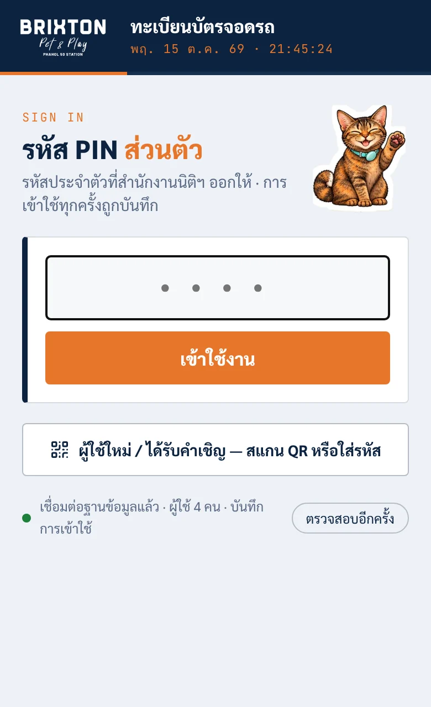
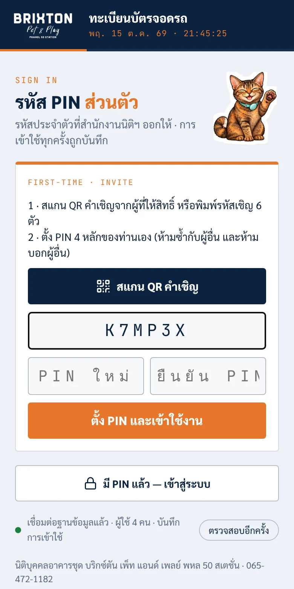
ครั้งแรก: รับคำเชิญ
- เปิดลิงก์คำเชิญที่ได้รับทาง LINE หน้าตั้ง PIN จะเปิดพร้อมรหัสเชิญให้
- หรือเปิดแอป แตะ ผู้ใช้ใหม่ / ได้รับคำเชิญ แล้วแตะ สแกน QR คำเชิญ จากโทรศัพท์ของผู้เชิญ หรือพิมพ์รหัส 6 ตัว
- ตั้ง PIN 4 หลัก พิมพ์ทั้งสองช่องให้ตรงกัน PIN ต้องไม่ซ้ำกับผู้ใช้คนอื่น
- แตะ ตั้ง PIN และเข้าใช้งาน แอปเข้าสู่ระบบให้ทันที และแสดงรหัสผู้ใช้ของท่าน เช่น GD03
ครั้งต่อไป
- เปิด phemarajata.github.io/bxt50-tags พิมพ์ PIN แล้วแตะ เข้าใช้งาน แอปรู้เองว่าท่านเป็นรปภ.
- ชื่อของท่านอยู่มุมขวาบน แตะชื่อเพื่อออกจากระบบทุกครั้งที่เลิกใช้งาน
สแกนบัตรจอดรถ
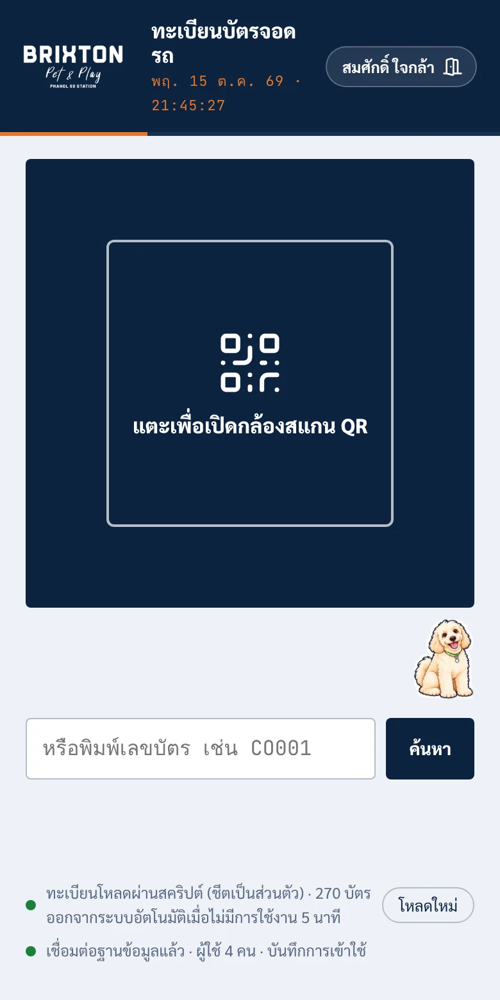
สแกน QR บนบัตร
- แตะกรอบสีกรมท่า แตะเพื่อเปิดกล้องสแกน QR ครั้งแรกให้กดอนุญาตการใช้กล้อง
- เล็ง QR บนบัตรให้อยู่ในกรอบ ห่างประมาณ 15–25 ซม. บัตรรถยนต์ติดด้านในกระจกหน้า บัตรจักรยานยนต์ติดบนตัวรถ ผลแสดงทันที
- ถ้า QR อ่านไม่ได้ (แสงสะท้อน ฟิล์มเข้ม) ให้พิมพ์เลขบัตรที่พิมพ์อยู่บนบัตร เช่น CO001 แล้วแตะ ค้นหา เว้นวรรคหรือพิมพ์ตัวเล็กก็ได้
| อักษรนำ | ประเภทบัตร |
|---|---|
| CO | รถยนต์ · เจ้าของร่วม |
| CR | รถยนต์ · ผู้เช่า |
| MO | จักรยานยนต์ · เจ้าของร่วม |
| MR | จักรยานยนต์ · ผู้เช่า |
ตามด้วยเลข 3 หลัก ถ้าขึ้น ไม่พบเลขบัตร … ในทะเบียน แปลว่าเลขผิดหรือไม่ใช่บัตรของโครงการ
หน้าแรกของ รปภ.
รปภ. เปิดบัตรได้ด้วยการสแกนหรือพิมพ์เลขบัตรเท่านั้น ค้นหาด้วยทะเบียนรถหรือเลขห้องไม่ได้ ถ้ารถไม่มีบัตรหรือบัตรอ่านไม่ออก ให้โทรสอบถามสำนักงานนิติฯ 065-472-1182
อ่านสถานะบัตร
สถานะอยู่บนสุดของหน้าบัตร แถบสีด้านบนการ์ดและป้ายมุมขวาบอกผลทันที ใต้เลขบัตรบอกวันหมดอายุหรือเหตุผล
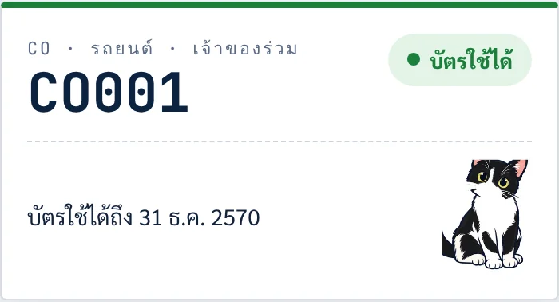
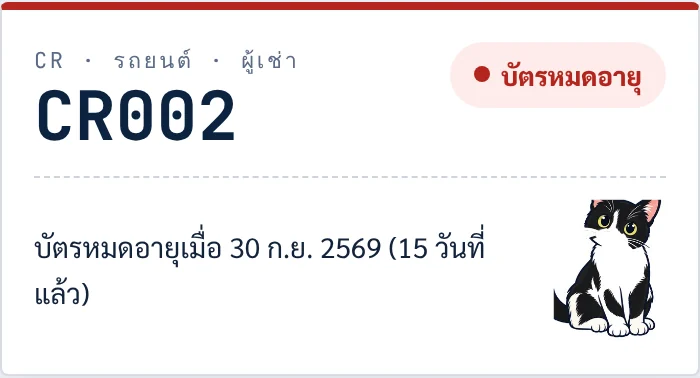
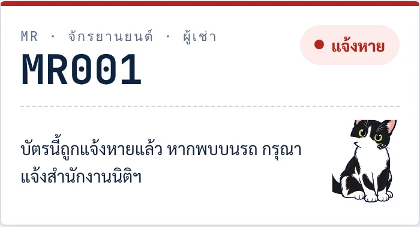
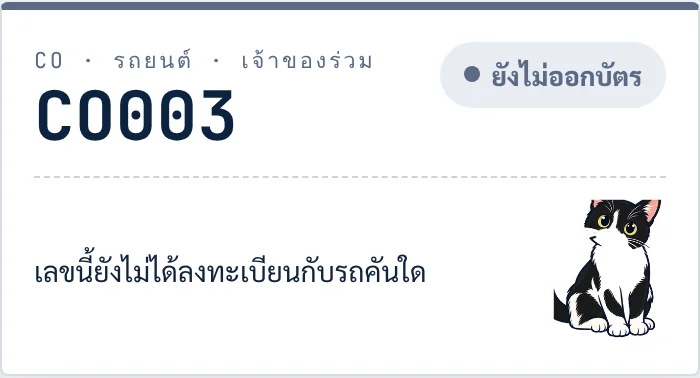
| ผลที่เห็น | ควรทำอย่างไร |
|---|---|
| ● บัตรใช้ได้ | จอดได้ตามสิทธิ์ที่แสดงในหน้าบัตร |
| ● บัตรใกล้หมดอายุ | ยังใช้ได้ เหลือไม่เกิน 30 วัน |
| ● บัตรหมดอายุ | มักเป็นผู้เช่าที่สัญญาสิ้นสุด แจ้งสำนักงานนิติฯ |
| ● แจ้งหาย | บัตรถูกแจ้งหายแล้ว หากพบบนรถ แจ้งสำนักงานนิติฯ ทันที |
| ● ยกเลิก / คืนบัตรแล้ว | ไม่มีสิทธิ์จอดในโครงการ แจ้งสำนักงานนิติฯ |
| ● ยังไม่ออกบัตร | ไม่ควรพบบนรถ แตะ โหลดใหม่ ที่หน้าแรกแล้วสแกนอีกครั้ง ถ้ายังขึ้นเหมือนเดิม แจ้งสำนักงานนิติฯ |
| ▣ รถคันที่ 2 ค้างชำระ | ค่าธรรมเนียมรายปีของรถคันที่ 2 เลยกำหนด แจ้งสำนักงานนิติฯ |
ข้อมูลที่รปภ. เห็น
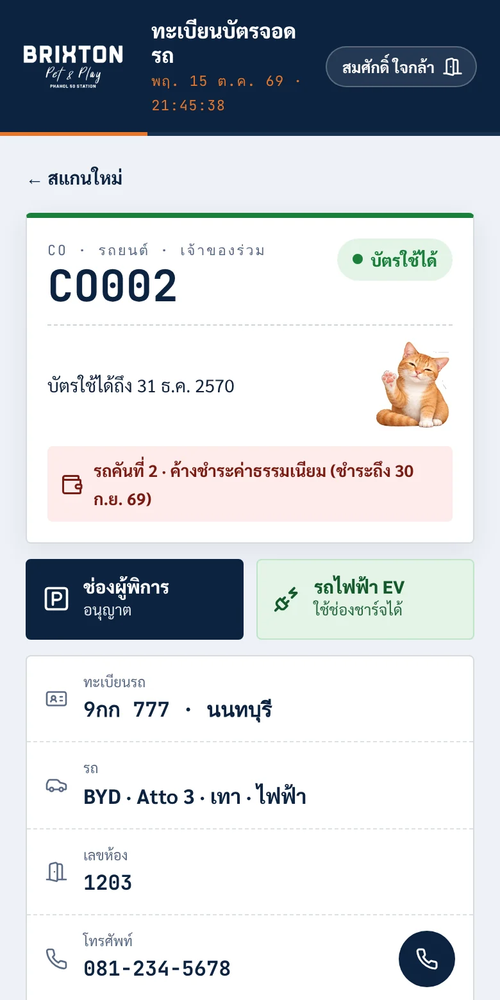
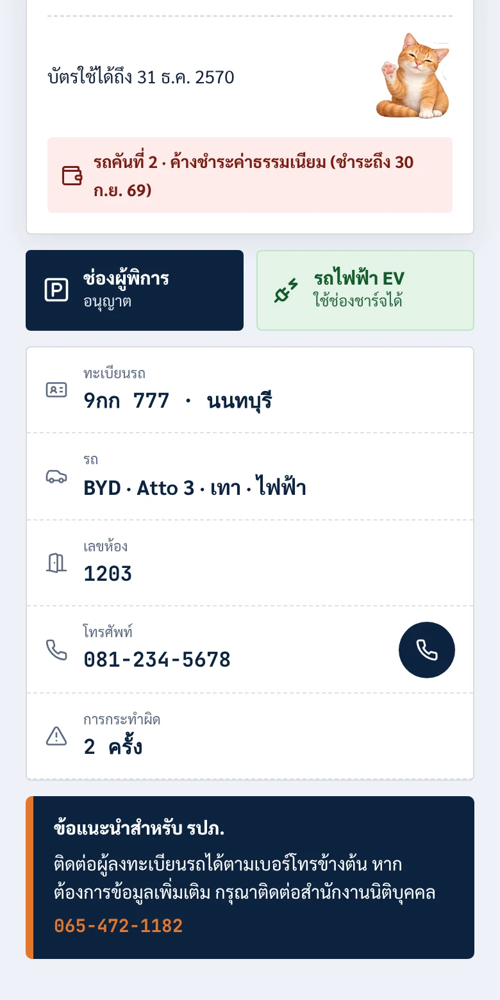
สิ่งที่ รปภ. เห็น
- สถานะบัตรและวันหมดอายุ
- สิทธิ์ช่องผู้พิการ หรือช่องบิ๊กไบค์ และรถไฟฟ้า EV
- ทะเบียน ยี่ห้อ รุ่น สี รูปรถ
- เลขห้อง เบอร์โทร และจำนวนครั้งที่กระทำผิด
สิ่งที่ รปภ. ไม่เห็น
ชื่อ บ้านเลขที่ LINE ID เบอร์สำรอง หมายเหตุ และรายละเอียดการกระทำผิด ระบบไม่ส่งข้อมูลเหล่านี้มาที่เครื่องของ รปภ. หากต้องการ ให้ติดต่อสำนักงานนิติฯ
ติดต่อเจ้าของรถ
แตะปุ่มโทรศัพท์สีกรมท่าข้างเบอร์โทร เพื่อโทรหาผู้ลงทะเบียนรถได้ทันที
รปภ. บันทึกการกระทำผิดเองไม่ได้ ให้แจ้งสำนักงานนิติฯ พร้อมเลขบัตร วันและเวลา และรายละเอียดที่พบ สำนักงานจะบันทึกในระบบให้ โทร 065-472-1182
คำถามที่พบบ่อย
ตรวจว่าเปิดผ่านลิงก์ github.io และอนุญาตกล้องแล้ว: ตั้งค่า → Chrome หรือ Safari → กล้อง จากนั้นโหลดหน้าใหม่ หรือพิมพ์เลขบัตรแทน
เปลี่ยนมุมเพื่อลดแสงสะท้อนบนกระจก หรือพิมพ์เลขบัตรที่พิมพ์อยู่บนบัตรแทน
บัตรอาจไม่ใช่ของโครงการหรือพิมพ์เลขผิด ตรวจอักษร CO / CR / MO / MR และเลข 3 หลัก
แตะ โหลดใหม่ ที่ด้านล่างหน้าแรก แล้วสแกนอีกครั้ง แอปโหลดทะเบียนตอนเข้าสู่ระบบเท่านั้น
แจ้งสำนักงานนิติฯ ให้กด รีเซ็ต PIN แล้วรับคำเชิญใหม่ ตั้ง PIN ใหม่ด้วยตนเอง
มีการใส่ PIN หรือรหัสเชิญผิดรวม 10 ครั้ง รอ 15 นาทีแล้วลองใหม่ หากเกิดบ่อยให้แจ้งสำนักงาน
ไม่มีการใช้งาน 5 นาที หรือใช้ต่อเนื่องครบ 12 ชั่วโมง ใส่ PIN เพื่อเข้าใหม่ได้ทันที
เป็นสัตว์เลี้ยงจริงของคณะกรรมการ 7 ตัว ผลัดกันขึ้นจอวันละชุด ไม่มีผลต่อการใช้งาน: ไข่ตุ๋น จี๊ด และตู้ม ของคุณเฟิร์น · มะเขือ & มังคุด ของคุณเบนซ์ · Raptor ของคุณอาย · จู๋จี๋ และเหมียว ของคุณพีระ
- ข้อมูลอยู่ในชีตส่วนตัวของนิติบุคคล เปิดได้ผ่านแอปหลังใส่ PIN เท่านั้น
- ออกจากระบบแล้ว ข้อมูลทะเบียนไม่ค้างในโทรศัพท์
- ทุกการเปิดดู แก้ไข และดูรูป ถูกบันทึกชื่อผู้ใช้และเวลา
- ใช้ข้อมูลเพื่อดูแลที่จอดรถเท่านั้น